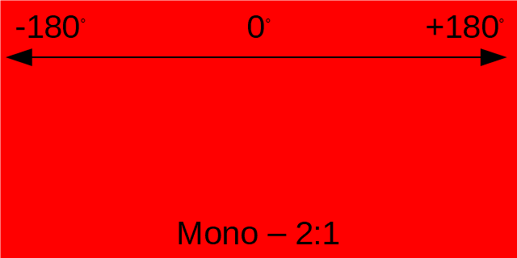
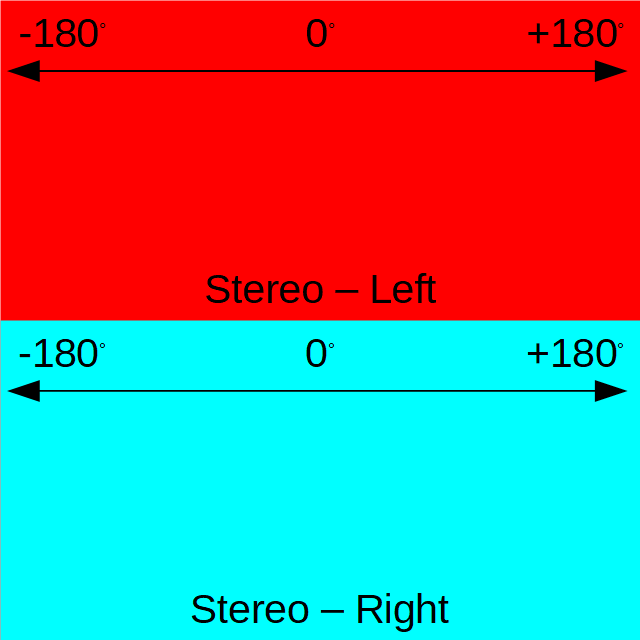

|
UE5 360 Stereo Panoramic Player 1.2.3
Create interactive Media Players and Virtual Tours for mono and stereo 360 panoramic images and videos in Unreal Engine 5.
|
Loading...
Searching...
No Matches
|
UE5 360 Stereo Panoramic Player 1.2.3
Create interactive Media Players and Virtual Tours for mono and stereo 360 panoramic images and videos in Unreal Engine 5.
|
You can display 360° panoramic media in either mono or stereo format. Images and videos must use the Equirectangular projection. Monoscopic media uses a single pano, while stereo media uses two stacked panos (over-under format). The top pano contains the image for the left eye, the bottom pano contains the image for the right eye.


For maximum compatibility and performance, image dimensions should be powers of two (e.g. 1024, 2048, 4096).
Note that some setup (e.g. PVR textures on iOS) could require/force your images to be square POT.
See links in the below References section for further details.
Playback of videos is powered by the UE5 Media Framework. For maximum compatibility and performance, 360° videos should be stored as MP4 files encoded with the H.264 compression scheme as indicated in the official UE5 documentation:
For the best compatibility and performance, it is recommended to use H.264 encoded MP4 (.mp4) container files.
and they must be stored in the Content/Movies folder:
Placing your media files inside the Content/Movies folder of your project will ensure that your media is packaged with your project correctly.
See the UE5 Media Framework documentation for other technical notes.
See links in the below References section for further details.
The plugin is never involved in the decoding of the video stream. The video decoding is exclusively performed by the standard UE5 Media Framework: the UE5 Media Player decodes the video stream into a UE5 Media Texture, that is continuously updated by the engine. The plugin then displays the content of the Media Texture into the Panoramic Sphere.
To improve the quality and performance of video playback, please look at the Unreal Engine settings and optimizations specific to your target platform.